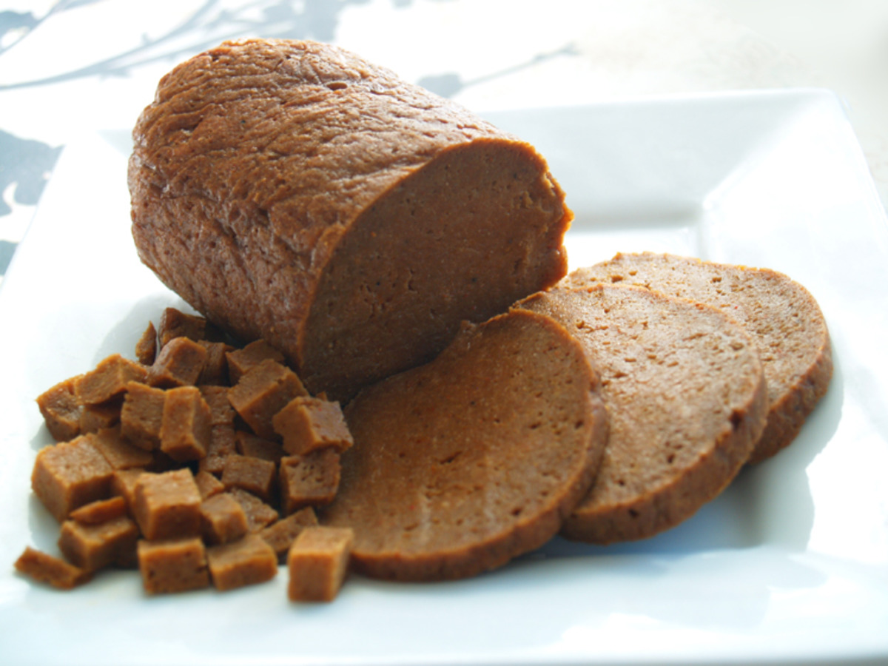

SEITAN RECIPE

-LOAF RATIO-
MIX WET INGREDIENTS
- 1.5-1.75 C. Veggie Stock
- .25 C. Ketchup
- .25 C. BBQ Sauce (or teriyaki, hoisin, etc.)
- 1-2 T. Olive Oil
- 2 T. Soy Sauce (liquid aminos or tamari)
- 1 t. Liquid Smoke (optional)
WHISK DRY INGREDIENTS
- 2 C. Vital Wheat Gluten
- 1 C. Nutritional Yeast
- 2 T. Garlic Powder
- 1 T. Onion Powder
- 1-2 t. Spices to Flavor (paprika, pepper, ginger, cayenne, etc.)
COMBINE WET AND DRY INGREDIENTS
KNEAD FOR 120 SECONDS
BAKE FOR 60 MINUTES AT 375 F.
TURN HALF WAY THRU